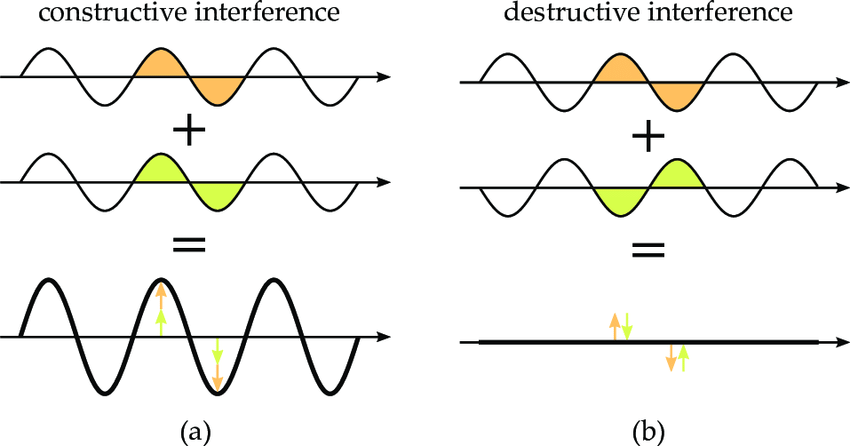
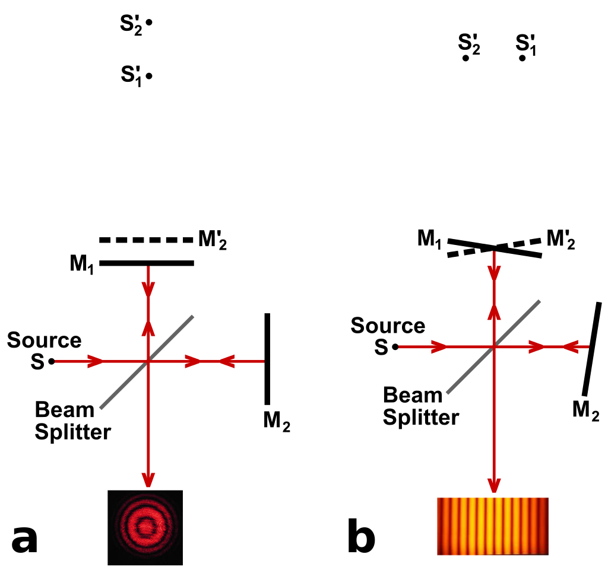
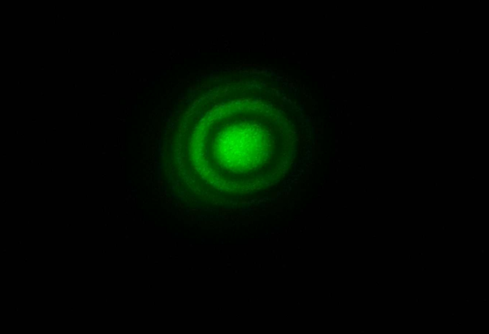
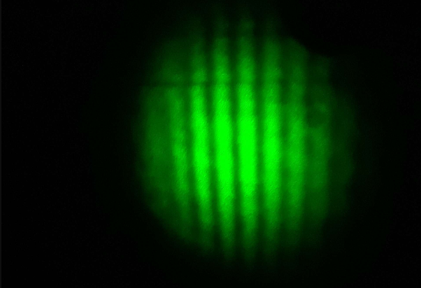

Michelson's Interferometer
I created a Michelson's interferometer as my Internal Assessment project for my International Baccalaureate Higher Level Physics credit. I utilized the principle of interference I had learned in class to demonstrate the wave properties of light. My objective was to determine the refractive index of a piece of crown glass with known thickness. Aligning the constructive and deconstructive waves such that I got a circular fringe pattern proved to be a very delicate process which took me weeks to perfect.

Interestingly, a large-scale Michelson's interferometer called the Laser Interferometer Gravitational-Wave Observatory (LIGO) was actually used to detect the presence of gravitational waves in 2015 (nearly 100 years after Einstein had predicted them in his General Theory of Relativity). Interferometers are also used in medical imagery and have atmospheric and space applications.
Background
An interferometer works by the principle of interference, which states that when two waves of the same wavelength and amplitude travel through the same medium, their amplitudes combine. Two or more waves constructively interfere (superimpose) if their peaks align, and they deconstructively interfere if a peak and a trough combine.

A typical interferometer works by shining a light source onto a beam splitter oriented at 45 degrees to the beam, where it divides and produces two beams of equal intensity. One beam hits Mirror 1 and gets reflected back, and the other beam hits Mirror 2 and also gets reflected back. The resulting beam passes straight through the beam splitter and reaches the screen to produce an interference pattern.

Design
The wavelength of the laser light (λ) was defined by the manufacturer as 5.32×10−7 m with an error of ±0.10×10−7 m. The angle of the glass plate rotation (θ) was measured by the digital angle measurement ruler. The fringe shift count (N) was counted by eye. The thickness of the glass plate (t) was measured ten times for accuracy, resulting in an average thickness of 1.897×10−3 m.
Where: n = index of refraction | N = fringe shift count | t = thickness of glass plate | θ = angle of glass plate rotation | λ = wavelength of laser light
Results
My resulting average index of refraction of crown glass was 1.495 ± 0.008, whereas the actual refractive index of crown glass is between 1.485 and 1.755. This was quite accurate for my purposes.
n = 1.495 ± 0.008
Glass Refractive Index — Calculated for different interference fringe shift counts
| N | Average Angle [deg] | Average Angle [Rad] | Average n by group | St. Dev. n | Uncertainty of n at 95% confidence |
|---|---|---|---|---|---|
| 80 | 14.7 | 0.257 | 1.505 | 0.036 | 0.044 |
| 100 | 16.3 | 0.285 | 1.515 | 0.015 | 0.018 |
| 120 | 18.1 | 0.316 | 1.492 | 0.011 | 0.014 |
| 140 | 19.6 | 0.342 | 1.486 | 0.010 | 0.012 |
| 180 | 22.3 | 0.389 | 1.480 | 0.015 | 0.019 |
| 200 | 23.2 | 0.405 | 1.493 | 0.015 | 0.038 |
| Average Mean and St. Dev. | 1.495 | ||||
Circular or linear fringes appear on the observation screen, depending on how the mirrors, laser, and glass are aligned. The brighter lines are constructive interference and the darker lines are destructive interference.


Additional Measurement Results
Raw Measurements
| N | Angle [deg] | Angle [Rad] | Individual n |
|---|---|---|---|
| 80 | 14.7 | 0.257 | 1.507 |
| 80 | 14.5 | 0.253 | 1.529 |
| 80 | 14.3 | 0.250 | 1.553 |
| 80 | 15.1 | 0.264 | 1.467 |
| 80 | 15.0 | 0.262 | 1.477 |
| 100 | 16.5 | 0.288 | 1.499 |
| 100 | 16.2 | 0.283 | 1.526 |
| 100 | 16.2 | 0.283 | 1.528 |
| 100 | 16.4 | 0.286 | 1.508 |
| 120 | 18.0 | 0.314 | 1.503 |
| 120 | 18.0 | 0.314 | 1.503 |
| 120 | 18.2 | 0.318 | 1.486 |
| 120 | 18.1 | 0.316 | 1.494 |
| 120 | 18.3 | 0.319 | 1.478 |
| 140 | 19.7 | 0.344 | 1.480 |
| 140 | 19.5 | 0.340 | 1.496 |
| 140 | 19.6 | 0.342 | 1.488 |
| 140 | 19.5 | 0.340 | 1.496 |
| 140 | 19.8 | 0.346 | 1.473 |
| 180 | 22.0 | 0.384 | 1.499 |
| 180 | 22.3 | 0.389 | 1.478 |
| 180 | 22.1 | 0.386 | 1.491 |
| 180 | 22.3 | 0.389 | 1.478 |
| 180 | 22.6 | 0.394 | 1.458 |
| 200 | 23.1 | 0.403 | 1.502 |
| 200 | 23.5 | 0.410 | 1.475 |
| 200 | 23.1 | 0.403 | 1.502 |
| Measurement Uncertainty at 95% confidence: 0.008 | |||
Glass Plate Thickness Measurements
| No. | Glass plate thickness t [mm] |
|---|---|
| 1 | 1.90 |
| 2 | 1.90 |
| 3 | 1.90 |
| 4 | 1.90 |
| 5 | 1.90 |
| 6 | 1.89 |
| 7 | 1.89 |
| 8 | 1.89 |
| 9 | 1.90 |
| 10 | 1.90 |
| Average: | 1.897 |
| St. Dev.: | 0.005 |
| Measurement Uncertainty: | 0.003 |